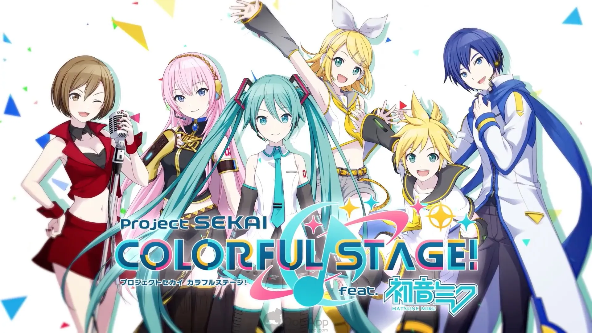
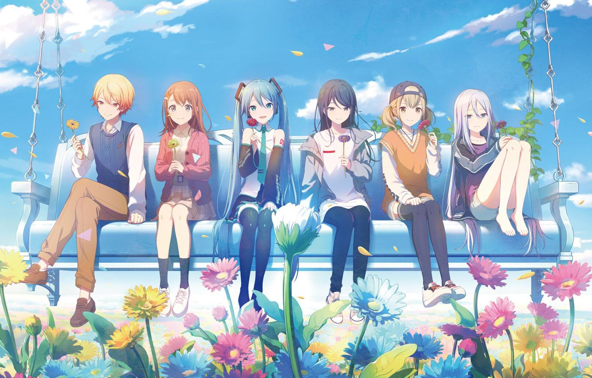

A FAN-MADE PROJECT SEKAI GUIDE
Hatsune Miku:
Colourful Stage
Explore Project SEKAI, including its chracters, music, stories and SEKAI worlds.

START EXPLORING THE GAME
Choose where to begin ⋆⭒˚.⋆
Click on a section to learn more about the different parts of Project SEKAI.
The Game
Learn how the rhythm game works and get an overview of its story.
Explore ↗ 02 / SINGERS 🎤︎︎Characters
Find out about the five groups and the Virtual Singers.
Explore ↗ 03 / MUSIC ၊၊||၊Music
Explore the songs featured in the game and the producers behind them.
Explore ↗ 04 / SEKAI ✈︎SEKAI Worlds
Learn about the the different SEKAI worlds and what shapes them.
Explore ↗ 05 / EVENTS ⁺˚✩₊Events & Cards
Find out how in-game events, event stories and character cards work.
Explore ↗With everyone next to me,
I want to shine as my own self.
- Hinomori Shizuku, MORE MORE JUMP JUMP!

ABOUT PROJECT SEKAI
Music, characters
and stories ✶⋆.˚
Project SEKAI is a rhythm game featuring songs from Vocaloid producers, original characters and Virtual Singers. Alongside the rhythm gameplay, players can follow the stories of five groups and their worlds.
Learn more about the game →